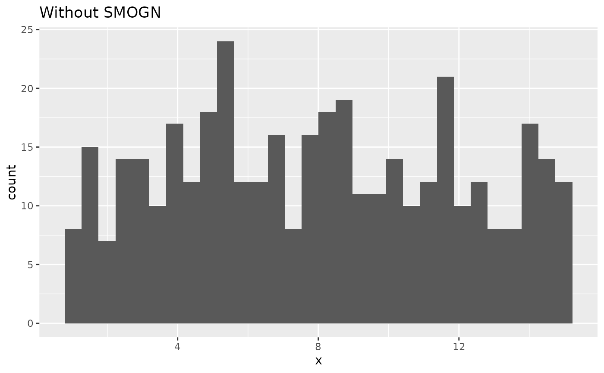
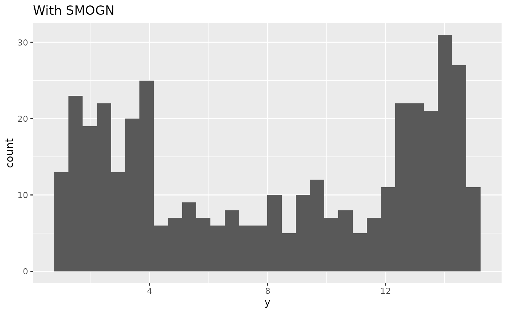

step_smogn() creates a specification of a recipe step that generates new
examples for imbalanced regression problems using SMOGN.
Usage
step_smogn(
recipe,
...,
role = NA,
trained = FALSE,
column = NULL,
threshold = 0.5,
relevance = NULL,
neighbors = 5,
perturbation = 0.02,
distance = "euclidean",
indicator_column = NULL,
skip = TRUE,
seed = sample.int(10^5, 1),
id = rand_id("smogn")
)Arguments
- recipe
A recipe object. The step will be added to the sequence of operations for this recipe.
- ...
One or more selector functions to choose which variable is used to sample the data. See recipes::selections for more details. The selection should result in single numeric variable. For the
tidymethod, these are not currently used.- role
Not used by this step since no new variables are created.
- trained
A logical to indicate if the quantities for preprocessing have been estimated.
- column
A character string of the variable name that will be populated (eventually) by the
...selectors.- threshold
A number between 0 and 1. Outcome values with a relevance at or above this value are treated as rare and over-sampled. Defaults to
0.5.- relevance
A matrix of relevance control points, or
NULL(default). WhenNULL, relevance is derived automatically from the boxplot extremes of the outcome. When supplied, the first column gives outcome values and the second column their relevance in[0, 1].- neighbors
An integer. Number of nearest neighbor that are used to generate the new examples of the rare values.
- perturbation
A number. The magnitude of the Gaussian noise added when generating synthetic examples in unsafe regions. Defaults to
0.02.- distance
A character string specifying the distance metric used for nearest neighbor calculations. One of
"euclidean"(default),"cosine","mahalanobis","manhattan", or"chebyshev".- indicator_column
A single string or
NULL(the default). If a string is given, a logical column with that name is added to the output, marking rows added by the step (TRUE) vs rows from the original data (FALSE).- skip
A logical. Should the step be skipped when the recipe is baked by
bake()? While all operations are baked whenprep()is run, some operations may not be able to be conducted on new data (e.g. processing the outcome variable(s)). Care should be taken when usingskip = TRUEas it may affect the computations for subsequent operations.- seed
An integer that will be used as the seed when applying SMOGN.
- id
A character string that is unique to this step to identify it.
Value
An updated version of recipe with the new step
added to the sequence of existing steps (if any). For the
tidy method, a tibble with columns terms which is
the variable used to sample.
Details
SMOGN is a pre-processing approach for imbalanced regression. A relevance
function assigns each outcome value a relevance score, and values with a
relevance at or above threshold are treated as rare. The data is split
into contiguous bins of rare and common outcome values. Common bins are
under-sampled and rare bins are over-sampled toward a balanced size. New
rare examples are generated either by interpolating between an example and a
nearby neighbor (when they are close enough to be considered safe) or by
perturbing the example with Gaussian noise (when they are not), where the
amount of noise is controlled by perturbation.
By default relevance is derived automatically from the boxplot extremes of
the outcome, giving the median a relevance of 0 and the extreme values a
relevance of 1. A matrix of relevance control points can instead be supplied
through relevance, with the first column giving outcome values and the
second column their relevance.
All columns in the data are sampled and returned by recipes::juice()
and recipes::bake().
All columns used in this step must be numeric with no missing data.
When used in modeling, users should strongly consider using the
option skip = TRUE so that the extra sampling is not
conducted outside of the training set.
Tidying
When you tidy() this step, a tibble is returned with
columns terms and id:
- terms
character, the selectors or variables selected
- id
character, id of this step
Tuning Parameters
This step has 1 tuning parameters:
neighbors: # Nearest Neighbors (type: integer, default: 5)
Case weights
The underlying operation does not allow for case weights. Supplying data with a case weights column to this step results in an error.
References
Branco, P., Torgo, L., and Ribeiro, R. P. (2017). SMOGN: a pre-processing approach for imbalanced regression. Proceedings of Machine Learning Research, 74:36-50.
See also
smogn() for direct implementation
Other Steps for over-sampling:
step_adasyn(),
step_bsmote(),
step_rose(),
step_smote(),
step_smoten(),
step_smotenc(),
step_svmsmote(),
step_upsample()
Examples
library(recipes)
library(ggplot2)
ggplot(circle_example, aes(x)) +
geom_histogram(bins = 30) +
labs(title = "Without SMOGN")

recipe(y ~ x, data = circle_example) |>
step_smogn(y) |>
prep() |>
bake(new_data = NULL) |>
ggplot(aes(y)) +
geom_histogram(bins = 30) +
labs(title = "With SMOGN")
